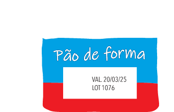
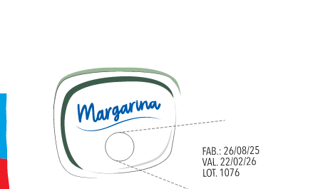

OBSERVE ALGUMAS INFORMAÇÕES NUMÉRICAS QUE ENCONTRAMOS NAS EMBALAGENS DOS PRODUTOS. VEJA AS IMAGENS A SEGUIR.

Pão de forma
VAL. 20/03/25
LOT 1076

Margarina
FAB.: 26/08/25
VAL. 22/02/26
LOT. 1890
▲ PRODUTOS ALIMENTÍCIOS COLOCADOS À VENDA DEVEM TER PRAZOS DE VALIDADE CLARAMENTE INDICADOS.
Fernando José Ferreira
1)
O QUE INDICAM OS NÚMEROS EM DESTAQUE?
Data de fabricação, data de validade e número do lote.
2)
PESQUISE A DATA DE VALIDADE DE 3 ALIMENTOS QUE VOCÊ CONSOME.
Resposta pessoal.
3)
EM DUPLA, VERIFIQUEM QUAL DESSES ALIMENTOS TEM O MENOR PRAZO DE VALIDADE E QUAL TEM O MAIOR.
Resposta pessoal.
PRATICANDO
1)
QUAL É A DATA DE SEU NASCIMENTO?
Resposta pessoal.
2)
ESCREVA EM QUAL MÊS NÓS ESTAMOS E QUAL É O NÚMERO CORRESPONDENTE A ESSE MÊS.
A resposta depende do dia da realização da atividade.
Na seção “Praticando”, as atividades 1 e 2 exploram o registro de datas, com o objetivo de desenvolver a habilidade dos estudantes em reconhecer e utilizar o calendário, compreender a relação entre os meses e os números correspondentes, além de praticar a escrita e interpretação.